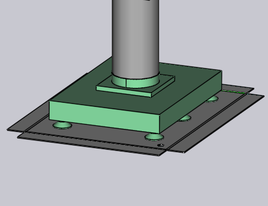
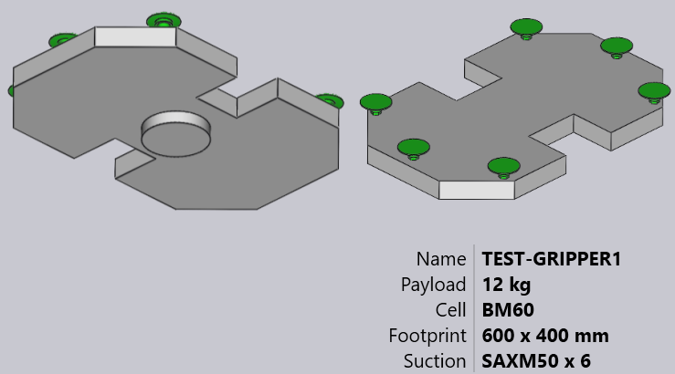

Import Gripper from DXF
A vacuum suction gripper for the BendMaster machines can be imported from a DXF file. The DXF file represents the top view of the gripper (top view means from the suctions cups, NOT from the BendMaster). POLYLINE entities in the DXF file provide the shape of the gripper plate and TEXT entities provide additional information about the gripper (like its name, thickness, and suction cup placement).
Files in the required format (DXF, ARV, or GEO) can be imported into the Bend Database
Procedure:
-
Open the Database inside Flux.
-
Select the Bend Grippers option from the list.
-
Click on the Import… option and select a gripper as DXF file from the directory.

Here is how this gripper looks after importing (shown in two views from below and above).

Basic Gripper
See the simple drawing shown below, which defines a gripper and can be saved as a DXF file to import back inside the Gripper inventory.
Here are some important points about how the DXF is drawn:
-
The origin of the drawing (0,0) corresponds to the robot’s wrist center. You can see this represented by a point and a circle in the figure. (Both the point and the circle are not really needed for the gripper import, since the gripper center is implicitly always at the origin).
-
This drawing also has some POINT entities representing each of the suction cup locations. Again, these are primarily for making the drawing more clear and are not actually used by the gripper importer (the suction cup positions are specified by text entities).
-
The actual plate shape is drawn as closed POLYLINE entities. If you have other polylines inside the outer one, they become holes in the plate.

Two-Layered Gripper
Slightly more complex grippers can be modeled using a separate BASEPLATE layer. Create a layer named BASEPLATE in the DXF file, and draw some closed POLYLINE shapes in that layer. Then this layer can have separate Z extrusion limits specified by the BASEPLATEEXTENT key. The tools needed to create and edit layers are now added.
-
Click on Related when a drawing is being edited.
-
Click on the Layers menu.
-
The Layer editor dialog is displayed. Here you can add new layers, rename them, set colors and line-styles.
-
In the drawing, clicking on an entity allows you to change the layer of that entity.
| Layer appears in the entity panel only if there are multiple layers in the drawing. |
-
After editing the drawing using these tools, save the drawing in DXF Format. Here is a DXF drawn using such a BASEPLATE layer (shown green in the image).

| For this gripper, the wrist extends from Z=0 to Z=23. Then, the base plate (green) extends from Z=23 to Z=40, as indicated by the BASEPLATEEXTENT key. Finally, the actual gripper plate (holding the suction cups) extends from Z=40 to Z=63, as indicated by the PLATEEXTENT key. |
| The gripper plate also has some hexagonal holes in it. |
When imported, this gripper looks like the image below:

Multi-Layered Gripper
Multi-Layered Grippers is an updated version of Two Layered Gripper in which more than two layers can be created and imported using Flux. To use a multi-layered gripper, the DXF will have to include the text VERSION = 2. A sample multi-layered gripper is shown below:
Each layer has to be defined with its extents like LAYER_1 = 23 : 35. The entities in this layer will be added to these extents. Similarly, the cups are defined in the form, CupNo = X pos, Y pos, [Cup type, Mounting height, Cup group].
| X and Y positions are mandatory. |
Different possible definitions for suction cups are explained below:
CupNo = X pos, Y pos with the name of the cup specified in CUPNAME as in the previous version
CupNo = X pos, Y pos, Cup type, wherein each cup type is defined separately (for oval cups, names vary with angle)
CupNo = X pos, Y pos, Cup type, Mounting Height
CupNo = X pos, Y pos, Cup type, Mounting Height, Cup Group
CUP1 = 275, 314, SAOB60x30_90grad_ged, 72, 2
If the mounting height is not specified, maximum plate extent is considered by default. Similarly, the suction cup group will be set to 1, if not defined.
| At the moment, Flux does not support different mounting heights for the suction cups. |
When imported, a sample gripper looks like the image below:
Multi-Circuit Gripper
You can create a multi-circuit gripper (a gripper that has several independent vacuum circuits). For such a gripper, each suction cup is assigned a non-zero group number.
This assignment happens by using a special form of the CUP1POS, CUP2POS etc strings. These take the form:
CUP1POS = 340,120 #6
CUP2POS = 420,140 #8
The value after the # is the suction group number for the cup. In this example, Cup 1 is assigned to suction group 6, Cup 2 is assigned to suction group 8, and so on.
For a multi-circuit gripper to be correctly configured, every cup must be assigned a suction group number in this manner.
The below image shows some sample grippers inside the bend Grippers database.